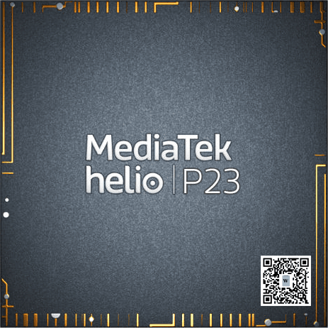

MediaTek Helio P23 (MT6763)
|  | |
| Manufacturer | MediaTek |
|---|---|
| Name | Helio P23 |
| Codenames | mt6763/mt6763t/mt6763v |
| Architecture | aarch64 |
| CPU | 8x 2.0 GHz Cortex-A53 |
| GPU | ARM Mali-G71 MP2 (Bifrost) @ 770 MHz |
| Year | 2017 |
| Process | 16nm |
| Mainline | no |
| Community Page | https://gitlab.com/mt6763-mainline |
| Components | |
| CPU |
Broken
|
| UART |
Works
|
| Storage |
Broken
|
| USB |
Broken
|
| Display |
Partial
|
| GPU |
Broken
|
| Pinctrl |
Broken
|
| I²C |
Broken
|
| SPI |
|
| Audio |
Broken
|
| Video |
Broken
|
| Thermal |
Broken
|
| WiFi |
Broken
|
| Bluetooth |
Broken
|
| Modem |
Broken
|
| GPS |
Broken
|
| Camera |
Broken
|
| Suspend |
Broken
|
{kind=link}
MT6763 (or Helio P23) is a mid-range MediaTek SoC released in 2017.
Devices
| Device | Codename | Mainline |
|---|---|---|
| Volla Phone | volla-yggdrasil | P |
Mainline fork
There is a
mainline kernel fork on GitLab @ mt6763-mainline/linux
where development is currently (2022-07-26 /
v5.19-rc8
) active.
Booting
Currently this SoC can only boot with
maxcpus=1
present in kernel cmdline; enabling SMP causes kernel panic and a huge amount of log spam.
DTBO
If your device has a
dtbo
partition like
the Volla Phone (volla-yggdrasil)
you'll have to figure out the bare minimum DTBO contents required to boot mainline with minimal DTS changes which typically consists of grabbing at least the
gpio_init_default
from the decompiled downstream
/sys/firmware/fdt
flattened DTB and making
a minimal DTBO for usage with mainline
.
Reserved memory
All
mblock-*
entries in downstream FDT
/reserved-memory
are automagically added by the bootloader and
SHOULD NOT
be reserved again in mainline DTS to avoid conflicting with the bootloader adding them.
As an example
mblock-6-framebuffer
@
0x7dca0000
is ready to use for
MediaTek Helio P23 (MT6763)#simplefb earlycon
already!
UART
UART output from the kernel can be enabled by setting
CONFIG_SERIAL_8250_MT6577=y
in your config and including
earlycon=mtk8250,0x11002000 console=ttyS0,921600n1
on the cmdline.
Minimal .config
A minimal kernel config you should get
some
output over UART with starts with a
make allnoconfig
and setting the following:
CONFIG_ARCH_MEDIATEK=y CONFIG_SERIAL_8250=y CONFIG_SERIAL_8250_CONSOLE=y CONFIG_SERIAL_8250_MT6577=y CONFIG_SERIAL_OF_PLATFORM=y
simplefb earlycon
No UART? No problem (probably)! With a currently (2022-07-24) out-of-tree driver from Nergzd723 you can get very early logging from the kernel directly on the display framebuffer!
One change to the driver is required however, that patch sets the
color_white
alpha to 0 essentially making the text invisible:
--- a/drivers/video/fbdev/earlycon.c
+++ b/drivers/video/fbdev/earlycon.c
@@ -107,7 +107,7 @@ static void simplefb_earlycon_scroll_up(void)
static void simplefb_earlycon_write_char(u32 *dst, unsigned char c, unsigned int h)
{
const u32 color_black = 0x00000000;
- const u32 color_white = 0x00ffffff; // a8r8g8b8
+ const u32 color_white = 0xffffffff; // a8r8g8b8
const u8 *src;
int m, n, bytes;
u8 x;
Next simply enable the driver in your .config (along with the ones from MediaTek_Helio_P23_(MT6763)#Minimal .config section just above):
CONFIG_FB_EARLY=y
Then just add
earlycon=simplefb,0x7dca0000,<width>,<height> console=simplefb
to your cmdline where
<width>
and
<height>
match your display resolution width and height respectively.
In case of Volla Phone (with display resolution of 1080x2340) this still resulted in garbled output on the display, try adding or subtracting from the width if this happens. The final
earlycon
value that worked was
simplefb,0x7dca0000,1088,2340
, so simply adding 8 to the width made it work as expected.
Minimal DTS
Minimal "booting" devicetree (excluding potential DTBO requirements) should look something like this:
/dts-v1/;
/ {
/* NOTE: if /model is defined the bootloader replaces it with "MT6763*" forcefully */
chosen {
/* /chosen/bootargs has to exist even if unused or bootloader will be unhappy */
bootargs = "";
};
/* /reserved-memory has to exist even if practically empty or bootloader will be unhappy */
reserved-memory {
ranges;
};
};
|
|
NOTE:
Some downstream nodes such as
kp@10010000
(along with select properties) might have to be added as well for the bootloader mode selection menu for example to work as expected!
|
Mainline workflow
With UART hooked up simply plugging in USB as well powers on the device automatically. By pairing this with flashing using mtkclient you easily at any point after flashing power off the device by just unplugging the USB cable, and reboot it by plugging it in again.
To power off without flashing anything you can run e.g.
mtk printgpt
and unplug the device after successful execution of the command.
Letting the ATF (ARM Trusted Firmware) watchdog still strategically reboot the device automatically ~10 seconds after booting can also be helpful with the quick flash, test and repeat cycle while getting all the logs you'd want over UART; you can add
initcall_blacklist=mtk_wdt_driver_init
(
CONFIG_MEDIATEK_WATCHDOG=y
) or
modprobe.blacklist=mtk_wdt
(
CONFIG_MEDIATEK_WATCHDOG=m
) to cmdline to prevent loading the watchdog driver.
Pending patches
- MediaTek Helio P23 (MT6763) SoC uses the MT6370 PMIC which there is a pending patch series for on the linux-mediatek mailing list that seems to include plenty of great functionality (yet to be tested on MT6763).
- CPUXGPT timer patch, now in linux-next (might not actually be relevant? needs further confirmation)